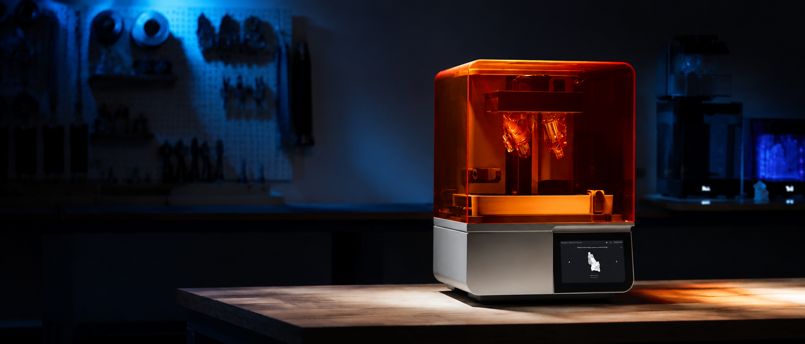
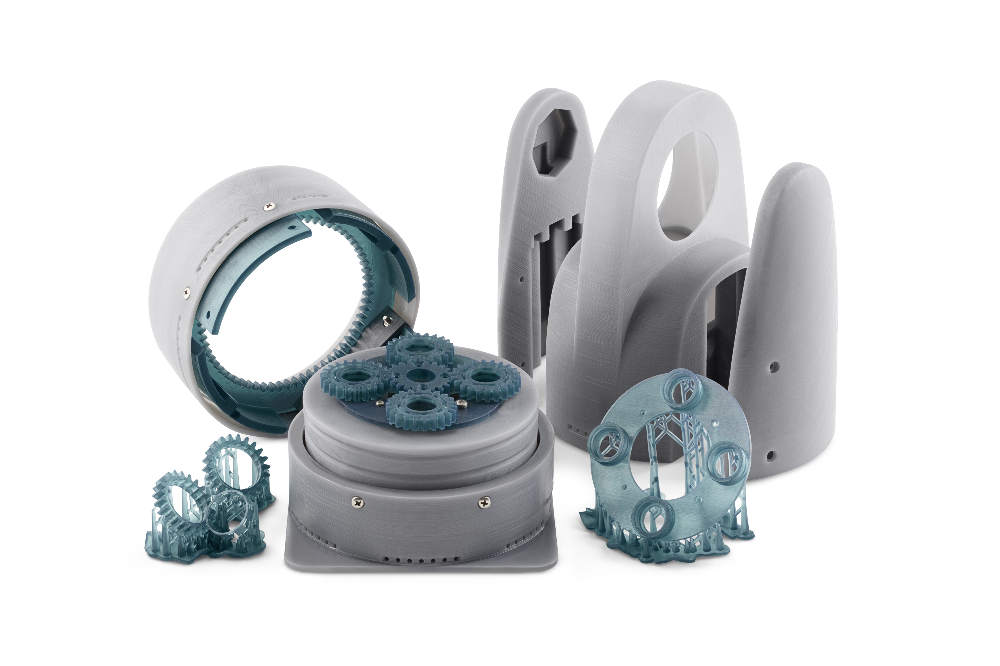

Prototype
Parts in hand within 24 to 48 hours, subject to design complexity and agreed terms. Our own Formlabs SLA machines run overnight, so fit, grip and mechanism are judged on the body and on the bench rather than on screen.
Printed overnight, reviewed at nine
Formlabs SLA printing in-house across rigid, tough, elastic and clear resins, plus FDM for jigs and fixtures. Washing, curing and finishing are done here too, so a change agreed at 5pm is a part on the table the next morning.

Resin chosen for the question asked
A part built to check clearance is not the part built to check grip. Each iteration is printed in the material that answers the question in front of it, at the finish that makes the answer trustworthy.
{{ m.title }}
- {{ i }}
03 · The iteration loop
{{ l.title }}
{{ l.desc }}
Testing and verification
Once the prototype holds up in the hand, it goes to V&V, biocompatibility and design-verification testing.